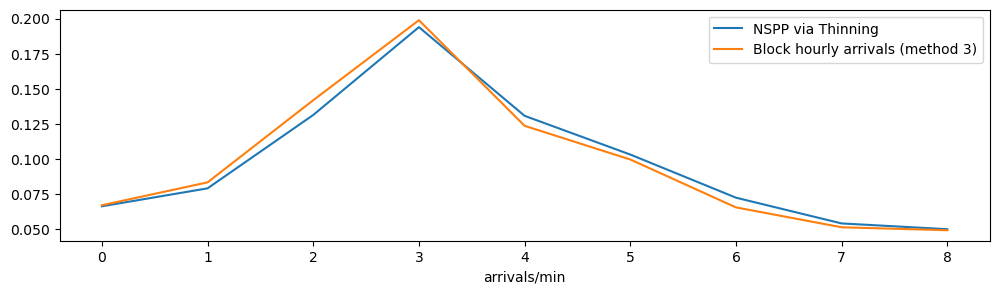

from sim_tools.datasets import load_banks_et_al_nspp
from sim_tools.time_dependent import NSPPThinningNSPP via thinning
This notebook provides an overview of how to use the time_dependent.NSPPThinning class.
Thinning is an acceptance-rejection approach to sampling inter-arrival times (IAT) from a time dependent distribution where each time period follows its own exponential distribution.
There are two random variables employed in sampling: an exponential distribution (used to sample IAT) and a uniform distibution (used to accept/reject samples).
All IATs are sampled from an Exponential distribution with the highest arrival rate (most frequent). These arrivals are then rejected (thinned) proportional to the ratio of the current arrival rate to the maximum arrival rate. The algorithm executes until a sample is accepted. The IAT returned is the sum of all the IATs that were sampled.
The thinning algorithm
A NSPP has arrival rate \(\lambda(t)\) where \(0 \leq t \leq T\)
Here \(i\) is the arrival number and \(\mathcal{T_i}\) is its arrival time.
Let \(\lambda^* = \max_{0 \leq t \leq T}\lambda(t)\) be the maximum of the arrival rate function and set \(t = 0\) and \(i=1\)
Generate \(e\) from the exponential distribution with rate \(\lambda^*\) and let \(t = t + e\) (this is the time of the next entity will arrive)
Generate \(u\) from the \(U(0,1)\) distribution. If \(u \leq \dfrac{\lambda(t)}{\lambda^*}\) then \(\mathcal{T_i} =t\) and \(i = i + 1\)
Go to Step 2.
sim-tools imports
general imports
import numpy as np
import pandas as pd
import matplotlib.pyplot as plt
import simpy
import itertoolsExample from Banks et al.
We will illustrate the use of NSPPThinning using an example from Banks et al.
The table below breaks an arrival process down into 60 minutes intervals.
| t(min) | Mean time between arrivals (min) | Arrival Rate \(\lambda(t)\) (arrivals/min) |
|---|---|---|
| 0 | 15 | 1/15 |
| 60 | 12 | 1/12 |
| 120 | 7 | 1/7 |
| 180 | 5 | 1/5 |
| 240 | 8 | 1/8 |
| 300 | 10 | 1/10 |
| 360 | 15 | 1/15 |
| 420 | 20 | 1/20 |
| 480 | 20 | 1/20 |
Interpretation: In the table above the fastest arrival rate is 1/5 customers per minute or 5 minutes between customer arrivals.
banks_arrival_profile = load_banks_et_al_nspp()
banks_arrival_profile| t | mean_iat | arrival_rate | |
|---|---|---|---|
| 0 | 0 | 15 | 0.066667 |
| 1 | 60 | 12 | 0.083333 |
| 2 | 120 | 7 | 0.142857 |
| 3 | 180 | 5 | 0.200000 |
| 4 | 240 | 8 | 0.125000 |
| 5 | 300 | 10 | 0.100000 |
| 6 | 360 | 15 | 0.066667 |
| 7 | 420 | 20 | 0.050000 |
| 8 | 480 | 20 | 0.050000 |
Model
We define a simple experiment and Time Dependent model used only for counting the number of arrivals in an hour using thinning.
simpyis used in a way to control for a fixed number of arrivals rather than a given run length.
class Experiment:
def __init__(self, arrival_profile,
random_no_set=None):
self.arrival_profile = arrival_profile
def init_sampling(self, random_no_set=None):
# producing 2 non-overlapping streams
seed_sequence = np.random.SeedSequence(random_no_set)
self.seeds = seed_sequence.spawn(2)
self.nspp_rng = NSPPThinning(self.arrival_profile, self.seeds[0],
self.seeds[1])
class TimeDependentModel:
def __init__(self, env, experiment):
self.env = env
self.experiment = experiment
# create array hold arrivals per hour of day.
self.samples = [0] * experiment.arrival_profile.shape[0]
self.n_arrivals = 0
def arrivals_generator(self):
for _ in itertools.count():
# simulated arrival
interarrival_time = self.experiment.nspp_rng.sample(self.env.now)
yield self.env.timeout(interarrival_time)
# add one to count for hour of the day
hour_of_day = int(self.env.now // 60) % \
self.experiment.arrival_profile.shape[0]
self.samples[hour_of_day] += 1
self.n_arrivals += 1def single_run(experiment, run_length=540, random_no_set=0):
"""
Run a single replication of the model.
"""
# sim environment
env = simpy.Environment()
experiment.init_sampling(random_no_set)
# create experiment and parameterise model
model = TimeDependentModel(env, experiment)
# set up simpy processes.
env.process(model.arrivals_generator())
env.run(run_length)
return model.samples
def multiple_replications(experiment, run_length=540, n_reps=5):
'''
Perform multiple replications of the model.
Params:
------
experiment: Experiment
Parameters/arguments to configure the model
run_length: float, optional (default=6540)
results collection period in minutes.
the number of minutes to run the model to collect results
n_reps: int, optional (default=5)
Number of independent replications to run.
Returns:
--------
pandas.DataFrame
'''
results = [single_run(experiment, run_length, rep)
for rep in range(n_reps)]
#format and return results in a dataframe
df_results = pd.DataFrame(results)
df_results.index = np.arange(1, len(df_results)+1)
df_results.index.name = 'rep'
return df_results# create experiment and parameterise model
experiment = Experiment(banks_arrival_profile)
results = multiple_replications(experiment, run_length=540, n_reps=10_000)
results.mean(axis=0)0 3.9890
1 4.7556
2 7.8881
3 11.6374
4 7.8514
5 6.1986
6 4.3569
7 3.2573
8 3.0115
dtype: float64# mean is average no arrivals in 1 hour. divide by 60 for per min.
hour_means = results.mean(axis=0) / 60.0
# visualise
fig = plt.figure(figsize=(12,3))
ax = fig.add_subplot()
# plot in this case returns a 2D line plot object
_ = ax.plot(hour_means)
# read in mthod 3
method3 = pd.read_csv("./banks_method3.csv")
_ = ax.plot(method3)
_ = ax.legend(["NSPP via Thinning", "Block hourly arrivals (method 3)"])
_ = ax.set_xlabel("hour of simulation")
_ = ax.set_xlabel("arrivals/min")